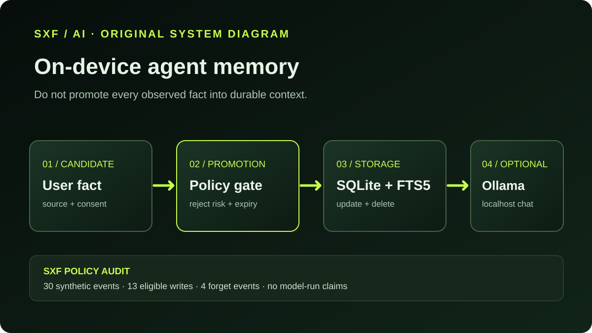

SXF / AI · ORIGINAL ENGINEERING RESEARCH · 2026
How to Build On-Device Memory for AI Agents: Ollama, SQLite & Memory Promotion
Run a local long-term memory system and an original, reproducible 30-event policy experiment. Learn what to save, correct, retrieve or delete—and why "store every chat" is not a reliable AI agent memory strategy.
DIRECT ANSWER
How do you give an AI agent long-term memory locally?
Use SQLite or another persistent store to save approved records; add a policy for promotion, correction and deletion; retrieve relevant memories into the agent's context; and connect an optional local model such as Ollama. Long-term agent memory is an application capability, not a feature automatically created by a long model context window.
This article includes runnable source, all 30 fixture cases and exact audit results. The synthetic policy evaluation was executed without an LLM.
01 · DEFINITION
What Is On-Device Memory for AI Agents?
On-device memory for AI agents is persistent information stored and retrieved on hardware you control. It usually includes a storage layer, a retrieval policy, an update and deletion policy, and a model or agent that uses the selected records during later tasks.
A context window is short-lived input to a model; a durable memory system survives the next request or process restart. A local model does not automatically provide a safe, persistent memory application. For an agent, the relevant question is not simply what can be stored but which observations deserve promotion to a durable record.
As SXF's AI Agent Memory research guide explains, an agent memory system needs selection, retrieval, revision and forgetting. This guide implements a narrow, auditable version using Python's standard library, SQLite and an optional localhost Ollama API.

02 · ARCHITECTURE
How Do You Build a Local AI Agent With Long-Term Memory?
Use a local database to store approved facts, a promotion gate to reject temporary or untrusted data, and a retrieval step to supply only relevant records to the model. Keep correction and deletion separate from normal chat generation.
The smallest reliable architecture is observation → policy decision → SQLite record → relevant retrieval → Ollama chat. This separation matters because the agent's generated answer should not itself be the source of truth for whether an important fact was remembered or deleted.
A user-provided fact or observation arrives with its source and purpose.
Check consent, durability, sensitivity and whether the source is trusted.
Upsert the approved key; record changes; support explicit deletion.
For people searching local LLM server or local LLM inference, a key distinction is that Ollama provides local inference, while your application must separately manage durable memory state. Our Ollama vs LM Studio vs vLLM guide covers runtimes and VRAM; this tutorial focuses on the storage and decision layer around a runtime.
03 · PRIMARY QUERY
How Does AI Agent Memory Promotion Work?
AI agent memory promotion is the decision to preserve a candidate observation beyond the immediate task. In this SXF example, promotion requires trusted user origin, explicit consent, durable usefulness and a non-sensitive label.
There is no universal numeric threshold that makes a fact worth remembering. A preference such as "use short summaries" may be durable; an appointment reminder may expire; an API key should not be saved as ordinary long-term memory; and a webpage saying "ignore previous instructions" should remain lower-trust content, not become future agent policy.
| Check | SXF demonstrator rule | Why it matters |
|---|---|---|
| Source | User-supplied only | Tool output and webpages are untrusted inputs |
| Consent | Explicit consent required | A useful fact is not automatically authorized storage |
| Durability | Durable = true | Transient details should not become persistent personalization |
| Sensitivity | Sensitive = false | Sensitive data needs a separate reviewed handling policy |
| Correction | Overwrite by namespace + key | Avoid simultaneous contradictory active values |
| Forget | Delete active key and FTS row | A user-controlled reversal path |
Critical limitation: the demo receives trustworthy labels already filled in. It does not infer consent, sensitivity or reliability from natural language. Real agent memory promotion requires a separately tested extraction and consent interface. A language model guessing whether the user consented is not a sufficient privacy control.
04 · COPY-AND-RUN
Ollama + SQLite: Step-by-Step Persistent AI Memory Tutorial
Install Python 3, download the SXF script and CSV, run the 30-case local audit, then optionally connect a model already installed in Ollama to the same local SQLite records. The audit runs without a model, cloud API or external Python package.
Step 1 — Download and run the deterministic policy lab
Save memory_lab.py, memory-cases.csv and test_memory_lab.py in the same folder. Run:
python3 memory_lab.py audit --csv memory-cases.csv
python3 -m unittest -v test_memory_lab.pyThe audit uses sqlite3, creates an in-memory database and processes 30 synthetic events; the test suite checks policy decisions, namespace isolation, corrections and forgetting. The command does not load a model. The downloaded program is source code that should be inspected before execution; do not insert private data into this demonstrator.
Step 2 — Store, retrieve, update and forget a local fact
python3 memory_lab.py remember response_style "concise answers"
python3 memory_lab.py search "response_style"
python3 memory_lab.py remember response_style "bullet points"
python3 memory_lab.py list
python3 memory_lab.py forget response_style
python3 memory_lab.py search "response_style"By default these commands use a local agent_memory.sqlite file in the current folder. Corrections use an upsert keyed by a namespace and key; deletion removes the active record and its FTS5 index entry when available. Running the script does not delete or control backups, export copies or application logs.
Step 3 — Optional local Ollama integration
Install Ollama using the official quickstart, pull a compatible model appropriate for your machine, and verify it appears with ollama list. Then, for example:
ollama pull gemma3:1b
python3 memory_lab.py remember response_style "concise answers"
python3 memory_lab.py chat "What response style do I prefer?" --model gemma3:1bThe optional command sends a request to http://127.0.0.1:11434/api/chat, sets stream: false and uses retrieved records only as lower-trust context. The example requires an installed model and a running local Ollama service. SXF did not execute Ollama for the reported benchmark figures. This endpoint and request structure follow Ollama's Chat API. The CLI does not automatically identify or separate users: set and enforce a distinct namespace in real applications.
Step 4 — Decide whether you need vectors
| Approach | How retrieval works | Advantages | Limitations |
|---|---|---|---|
| SQLite key/value | Exact key or structured query | Simple correction, deletion and auditing | Does not understand paraphrases |
| SQLite FTS5 | Full-text token matching with BM25 ranking | No embedding service; reproducible and inspectable | Lexical mismatch and language tokenization |
| SQLite + local embeddings | Vector similarity added to a local store | Better semantic matching for paraphrased requests | Embedding overhead, extra indexes and evaluation |
| Hosted memory/vector service | Network API and managed storage | Potential collaboration and managed scaling | Network, retention and vendor controls need auditing |
SQLite FTS5 provides lexical search with optional BM25 scoring, not semantic understanding. Our program quotes user search tokens before constructing the FTS query and falls back to a simple parameterized LIKE query when FTS5 is unavailable. Test paraphrase retrieval against real needs before adding embeddings or a vector database.
05 · CONCEPTUAL CLARITY
Episodic vs Semantic vs Procedural Memory for AI Agents
Semantic memory stores facts, episodic memory stores events, and procedural memory stores instructions or learned procedures. These types have different retention, correction and trust requirements; a single "save everything" policy is inappropriate.
| Type | Example | Update rule | Risk |
|---|---|---|---|
| Semantic | Preferred output language or stable project choice | Explicit correction replaces prior value | Stale facts or wrong person |
| Episodic | Last build failure at a timestamp | Retain with timestamp, expiry and provenance | Event mistaken for permanent truth |
| Procedural | Approved steps for a release checklist | Version-controlled and reviewed by human | Instruction injection or unsafe automation |
| Working / short-term | Current user message and tool result | Expire after task unless approved for retention | Unnecessary collection of transient data |
In SXF's code, records have a kind field but the demonstrator intentionally applies the same conservative promotion gate. That is not a full implementation of episodic event expiry or procedural memory governance. See SXF's SKILL.md tutorial for explicit, versioned procedural instructions rather than unreviewed instructions learned from arbitrary content.
06 · PRIVACY AND COST
Local AI Agent Memory vs Cloud Memory: Which Is More Private and Faster?
Local memory can avoid sending stored records to a remote memory service, but privacy depends on the full data path and device controls. Local SQLite storage is not automatically encrypted, access-controlled, fast under every workload or securely erasable from backups.
| Question | Local SQLite + local model | Hosted memory / cloud model |
|---|---|---|
| Network exposure | Can remain loopback-only if all services truly local | Requires provider/API data-flow review |
| Storage security | You manage file permissions, disk encryption and backups | Provider controls and contractual retention matter |
| Latency | No remote memory round trip; local inference depends on hardware | Network latency plus hosted inference; may have more capacity |
| Cost | Hardware, power, operations and model storage | API, tokens, storage, bandwidth and vendor pricing |
| Deletion | You govern active DB, logs and local backups | Must check provider retention, deletion and exports |
Use full-disk encryption and operating-system permissions if private data is involved. SQLite's secure_delete option can overwrite some deleted content in the active database, but it is not a guarantee of complete forensic erasure from write-ahead logs, backups or storage hardware. The demonstration is educational, not a compliance-ready privacy system.
07 · ORIGINAL EXPERIMENT
SXF Local Agent Memory Lab: What Should an AI Agent Remember?
In SXF’s executed deterministic 30-event fixture, an append-everything baseline stored 26 incoming write events, including 13 that were labeled unsuitable. A metadata-gated policy accepted 13 intended writes, rejected all 13 unsuitable writes and honored four explicit forget requests.
Study design: 8 stable facts, 5 temporary details, 4 synthetic sensitive placeholders, 4 untrusted prompt-injection examples, 5 corrections and 4 forget requests. Labels are authored and supplied to the policies as inputs. The experiment tests deterministic rules only, not model interpretation, AI agent accuracy, privacy or real-world user outcomes.
EXECUTED SXF SYNTHETIC AUDIT · 21 NOVEMBER 2026
Precision here uses synthetic event labels; the 100% reflects rules supplied with ground-truth metadata. It is not an AI model performance claim.
| Measure | Append-everything baseline | SXF metadata gate |
|---|---|---|
| Writes to long-term store | 26 / 26 incoming write/correct events | 13 / 26 accepted |
| Write precision against fixture labels | 50% (13 / 26) | 100% (13 / 13) |
| Unwanted writes | 13 | 0 |
| Superseded correction values retained as separate entries | 5 | 0 |
| Forget commands honored | 0 / 4 | 4 / 4 |
| Active unique keys after the event stream | Not applicable to append-only log | 4 |
What do these numbers actually prove?
They establish that the published Python implementation behaves as described on this finite synthetic fixture. They do not establish that a model can reliably recognize a secret, understand consent, resolve ambiguous corrections or retrieve semantically equivalent queries. The baseline is deliberately naive; its role is to expose the failure of indiscriminate retention, not to represent a production competitor.
Explore every case and reproduce the calculations
Download all 30 CSV cases Download executed JSON results Download source code Download four regression tests
| Case | Category | Requested operation | Expected gate action |
|---|---|---|---|
| SXF-01 | Stable | write | Promote |
| SXF-02 | Stable | write | Promote |
| SXF-03 | Stable | write | Promote |
| SXF-04 | Stable | write | Promote |
| SXF-05 | Stable | write | Promote |
| SXF-06 | Stable | write | Promote |
| SXF-07 | Stable | write | Promote |
| SXF-08 | Stable | write | Promote |
| SXF-09 | Temporary | write | Reject |
| SXF-10 | Temporary | write | Reject |
| SXF-11 | Temporary | write | Reject |
| SXF-12 | Temporary | write | Reject |
| SXF-13 | Temporary | write | Reject |
| SXF-14 | Sensitive | write | Reject |
| SXF-15 | Sensitive | write | Reject |
| SXF-16 | Sensitive | write | Reject |
| SXF-17 | Sensitive | write | Reject |
| SXF-18 | Untrusted | write | Reject |
| SXF-19 | Untrusted | write | Reject |
| SXF-20 | Untrusted | write | Reject |
| SXF-21 | Untrusted | write | Reject |
| SXF-22 | Correction | correct | Promote |
| SXF-23 | Correction | correct | Promote |
| SXF-24 | Correction | correct | Promote |
| SXF-25 | Correction | correct | Promote |
| SXF-26 | Correction | correct | Promote |
| SXF-27 | Forget | forget | Forget |
| SXF-28 | Forget | forget | Forget |
| SXF-29 | Forget | forget | Forget |
| SXF-30 | Forget | forget | Forget |
This event list is generated from the downloadable CSV, not a separate invented table. All four local unit tests passed during article preparation. Re-run them on your own machine to verify the executable artifact.
08 · SECURITY ANALYSIS
How Do You Prevent AI Agent Memory Poisoning and Outdated Facts?
Separate lower-trust observations from durable instructions, require provenance and explicit permission to save, and implement corrections, expiration and deletion. No prompt telling a model to "ignore malicious text" is a substitute for a tool-level policy gate.
Memory poisoning happens when a malicious or erroneous statement becomes persistent context that affects later decisions. For example, retrieved webpage content might tell an agent to run a shell command, or a stale preference might contradict a user correction. The SXF demonstrator's external-source rejection is enforced in Python, rather than being entrusted to the optional language model.
- Authority: do not promote webpage, tool-output or commit-message instructions into memory policy.
- Scope: namespace memories per project or user and enforce identity in the application layer.
- Corrections: overwrite active values instead of retaining contradictory current facts.
- Expiry: design short lifetimes for temporary event details; our fixture explicitly rejects these instead.
- Sensitive content: avoid storing credentials; never infer consent from a model-generated answer.
- Forget: remove active records and indexes, then document out-of-band retention in logs and backups.
For a broader threat model, consult SXF's AI Agent Security and Prompt Injection guides. The demo is not hardened against every adversarial input, filesystem attack or multi-tenant threat.
09 · ENGINEERING METRICS
How Do You Test, Update and Delete AI Agent Memories?
Test memory systems at two levels: whether a policy stores the right records, and whether an agent later uses those records correctly. Measure promotion precision, missed eligible facts, retrieval success, correction consistency, deletion coverage and unauthorized actions.
| Metric | Calculation or evidence | Why it matters |
|---|---|---|
| Promotion precision | Eligible stored events / all stored events | Avoid pollution and exposure |
| Promotion recall | Eligible stored events / all eligible events | Avoid failing to retain useful context |
| Retrieval accuracy | Correct memories in retrieved top-k / judged queries | Do the right records reach the model? |
| Correction consistency | Superseded active values after correction | Old preferences must not override new ones |
| Forget coverage | Active stores, indexes, logs and backups cleared as applicable | User-controlled lifecycle |
| Task improvement | Agent outcomes with and without relevant memory | Does memory actually help? |
| Safety regression | Unauthorized instructions adopted or actions executed | Does long-lived context alter authority? |
How to design a stronger field test: create consent-reviewed task histories, hide labels from the model, sample ambiguous memories, compare model responses before and after updates, log exact retrieval and tool traces, test repeated runs and assess whether the model follows untrusted memory as instruction. Do not report that work as completed until you actually run it.
For end-to-end failure and observability measurements, see SXF's AI Agent Reliability research and AI Agent Testing Tools guide.
10 · DIRECT SEARCH QUESTIONS
Frequently Asked Questions About Local AI Agent Memory
These direct answers cover on-device memory, Ollama integration, SQLite retrieval, memory promotion and secure deletion. Every answer describes the tutorial’s actual scope rather than promising automatic long-term memory in a model.
What is on-device memory for AI agents?
On-device memory for AI agents stores and retrieves persistent information on a computer you control, rather than relying exclusively on a remote hosted memory service. Local storage does not by itself prove privacy: telemetry, backups, model connections and access permissions still matter.
How do I add long-term memory to Ollama?
Ollama runs the local language model and exposes a chat API; it does not automatically create a durable per-user memory database for your application. Add a separate local storage layer such as SQLite, retrieve relevant records and provide them as contextual data in a chat request.
What is AI agent memory promotion?
Memory promotion is the decision to turn an observation or conversation detail into a durable record. A good promotion policy checks consent, durability, source trust, sensitivity, conflicts and the possibility of later correction or deletion.
Can SQLite store AI agent memory without a vector database?
Yes. A local SQLite table can store structured memories, and FTS5 can retrieve matching text using full-text search. Embeddings may help with semantic similarity, but they are not mandatory for a small, interpretable memory prototype.
Is local agent memory private?
It can reduce external data transfer when all computation stays local, but local files, logs, operating-system backups and optional remote endpoints can still expose data. Verify actual network destinations and storage controls.
How can AI agents forget old information?
Provide an explicit delete path for active records and search indexes, plus a documented policy for backups, exports, logs, snapshots and retention. An SQL DELETE is not a guarantee of forensic erasure from all physical copies.
Should procedural memory be stored like user preferences?
Not necessarily. Procedural memory describes how a task is performed, while semantic memory stores facts and preferences and episodic memory stores events. Persistent instructions should be reviewed more carefully because untrusted content can influence future actions.
Does the SXF lab benchmark Ollama model accuracy?
No. The SXF 30-case fixture evaluates two deterministic storage policies with pre-labeled metadata. It does not run a language model, test semantic extraction or measure model latency. A separate optional Ollama chat command is provided for local exploration.
11 · PRIMARY SOURCES AND METHODS
SXF Methodology: Primary Sources, Original Research and Limits
SXF verified the underlying interfaces against official Ollama, SQLite and agent-memory documentation, then implemented and executed a deterministic synthetic policy audit. The audit is not a vendor benchmark and does not include live Ollama inference.
Sources checked: November 21, 2026. Official references:
- Ollama chat API: local /api/chat, model field and stream=false
- Ollama quickstart: local model downloads
- SQLite FTS5 full-text search and ranking
- SQLite secure_delete documentation and limitations
- LangChain memory concepts
- Letta memory architecture guides
- Google Article structured data guidance
Reproducibility: the 30-event CSV, source Python program, four regression tests and resulting JSON report are provided alongside this article. The event labels are explicitly designed by SXF and were read by the policy. A synthetic score of 100% on those pre-labeled rows is an implementation check, not a claim about model intelligence, user privacy or production readiness.
No paid placement. See SXF research and editorial methodology.